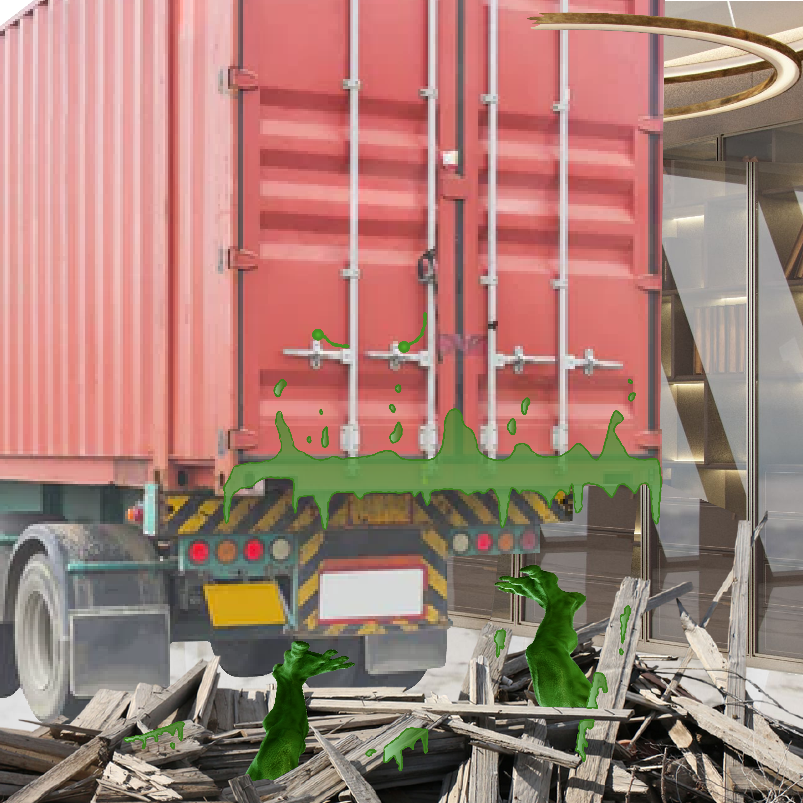

Check: Interlude: Classics
Metameta solved!
You BACK A LORRY AT HIM THEN EARN A MONSTER’S DEBRIS. As the truck slams into Dean Martian, he wails: “Noooo! The Earth was mine for the taking, and you NERDS ruined it all!” Moments later, his body explodes, raining gristle and goo down around you. It’s... gross.
As you catch your breath you have a chance to think back on the time you spent at Puzzle University – all of the courses you took, and scary monsters you defeated. It’s true that it’s been a whirlwind scholarship and you have no idea how you actually made it through, but you are suddenly struck by a terrible thought: perhaps there’s no one left who can grant you your degree! But another school administrator leaps to your aid...
PS: Now that you've finished, you're welcome to join us in the post-hunt Discord. We'd also love it if you would fill out our feedback form.
Metameta open
As the last department head falls to your puzzling prowess, you realize there is one last thing you need to do to make the grade: Defeat Dean Martian and save the world!
Sociology solved
You flood the School Bullies’ feeds with CLIQUE BAIT and they wander off, distracted by top ten lists and quizzes about which Mean Girls character they are.
Sociology open
The SCHOOL BULLIES are swimming around the entrance to the building. You’ll need to build up a strong social network to fight back!
Classics solved
The best thesis defense is a THESEUS OFFENSE! You slowly replace every part of the minotaur until he’s no longer the monster who wanted to rule the Classics department.
Classics open
The MYTH CHIEF heads up the Classics department, and you get the feeling it will require legendary effort to take him down.
Math solved
You grab a cart and RAM ALPHA WOLF. He turns tail and runs out, howling in fear. The rest of the pack, no longer able to count on his leadership, soon follow.
Math open
The math department has been taken over by a pack of werewolves, led by WERE NUMBER ONE. They’ve heard that there’s strength in numbers, and they’re taking this literally!
Computer Science solved
You work through all the program loops and watch as the status bar slowly fills. Finally you see PEST CONTROL ASSAULT COMPLETE and the bugs fall to the ground.
Computer Science open
The whole Computer Science building is riddled with BUGS! Get to squashing!
History solved
Of course! The history-muddling vampires are at their weakest in A CLERICAL ERA! You spray them down with holy water and they disappear, returning the timeline to its normal state.
History open
It’s going to be tough to understand your History courses with these UNHOLY PREDATERS running around and messing with the past.
English solved
You LET EM HALVE IT and the Doppelgängers suddenly coalesce, each evil pair coming together and forming a completely normal, non-evil English professor.
English open
You blink your eyes, but everywhere you look you see NEGATIVE DOUBLES; you’ll never not be unable to get through your English reading with them around.
Music solved
You get the spirit to back down by threatening to DRUM KITS. She gathers her children and leaves, and as the door closes behind her you hear her say “Mikon~!! Grow up to be the kind of kitsune who climb the ladder of success song by song...”
Music open
The vixen of the Music department, TAMAMO-NO-MAE WEST, is spreading disharmony and violins. You’ll need to chordinate with your team to stave her off!
Economics solved
You SHUT ELECTRICAL DOWN, resulting in elec-trickle-down effects: Lore stops moving, Data comes to his senses, and the stock market goes back to making just as much sense as B-4.
Economics open
Lore took over the Econ department and has DATA TRADING - now all these numbers are moving way too fast for you to figure anything out.
Welcome to Monster University
You can’t believe it! By discovering the message hidden in the placement test you’ve revealed the fact that the Dean is a Martian! DEAN MARTIAN! And now he wants to see you! You head to his office and find him, looking a bit more green and antenna-y than you expected, sitting behind his large futuristic desk.
“Ah, hello! I knew we had some bright enrollees this year, but you’ve completely surpassed my expectations. In 23 years you are the first students to correctly finish the placement test and my secret is finally out – I’m not quite ‘of this Earth’. And I think you’ll soon discover, neither are any of the department heads. In fact, allow me to be the first to welcome you... to Monster University!
You see, I found that normal human professors weren’t getting the results I needed. Normal students weren’t quite fitting the bill, either, so I decided to enact my master plan: harness the power of Earth’s most incredible creatures – PUZZLERS! By finding the message I hid in the placement test you’ve proven that you just might have what it takes to change the world! Now get back to class and show me you’ve got what it takes!”
You’re not sure why, but you get the feeling that when Dean Martian says “change the world” he doesn’t necessarily mean for the better! Hopefully you can learn more by hitting the books. It’s time to find out what kinds of classes you’re going to be taking.